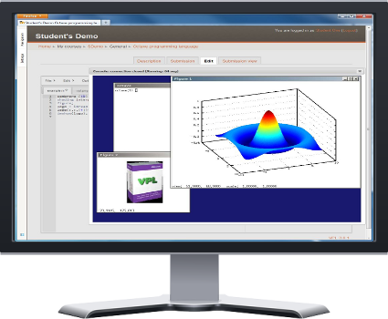

This page is ready for additional product screenshots as the project content grows. Add local images to the images folder and place them in figures like the example above.
See VPL in context

This page is ready for additional product screenshots as the project content grows. Add local images to the images folder and place them in figures like the example above.